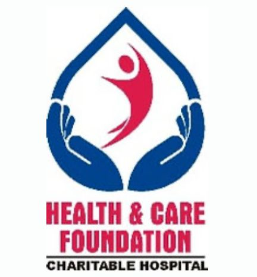
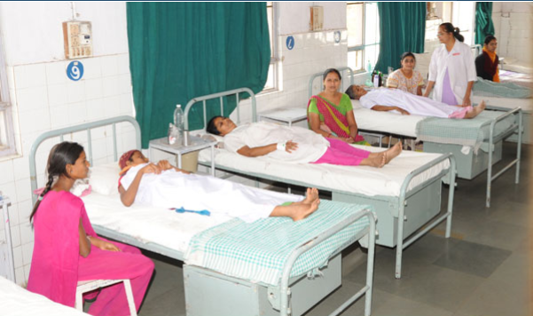
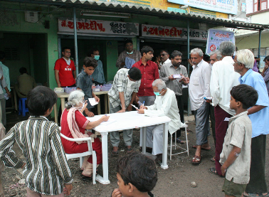
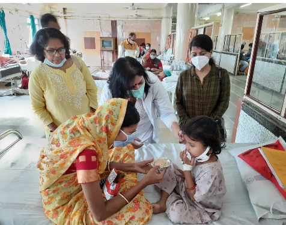
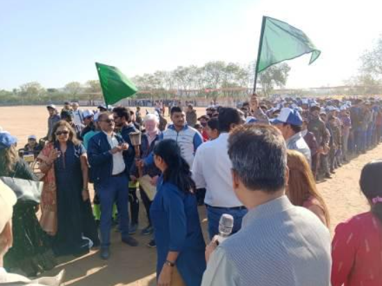
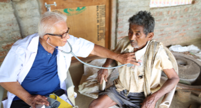

Our mission is to support medical centers that provide life-saving treatments to underserved communities. Whether it's through funding vital equipment, helping cover surgery costs, or assisting health workers in rural areas—every contribution you make brings hope and healing to someone in need.
HaloHaven partners with verified healthcare facilities across regions to ensure donations reach the right hands, and volunteer programs help with medical camps, health education, and patient care.

NGO-run healthcare center offering subsidized and free cancer care for vulnerable groups. Their work focuses on early diagnosis and compassionate treatment.
HEALTH & CARE FOUNDATION, (formerly known as Polio Foundation) was founded in 1987 by a handful of dedicated Doctors and like-minded persons to rehabilitate polio afflicted persons through surgeries.
Our goal is that irrespective of their economic condition, no patient should ever have to leave our premises without proper treatment. We are indebted to our Doctors and esteemed Donors for their continuous support in making this goal come true.

State Cancer Institute in Ahmedabad providing affordable, comprehensive cancer treatment, research, and patient housing for long-term therapies.
What began as a thoughtful, socially responsible gesture in 1961 has today touched millions of lives, offering comprehensive cancer treatment and care.
While journey till date is certainly a milestone, it's the future and our mission to reduce the burden of the disease in the coming years which is more compelling.
GCRI is a State Cancer Institute located in Ahmedabad (Gujarat state) and one of the largest cancer care centers of the country with modern cancer facilities for diagnosis and treatment.

Sanjivani Health and Relief Committee is a not-for-profit Organization registered as a Charitable Trust with registration no. E- 17400 (Ahmedabad) on Nov. 25, 2005 providing qualified health care services to poor people of villages around Ahmedabad in the districts of Ahmedabad, Gandhinagar and Kheda at nominal cost at their doorstep and since 2012 have entered in field of Education with a mission of Education for all at an effordable rates.
Unique feature of SHRC is to provide healthcare services to poor village people at their doorsteps. SHRC sends its team of doctors, paramedical staff and volunteers in a mobile van to villages and provides general medical care, eye care, dental care, blood sugar testing, hypertension testing and ECG services and Mobile Pathology Laboratory.

This NGO supports terminally ill cancer patients with home-based palliative care, ensuring love, dignity, and relief in their final days.
We at Aatmaja focus specially on cancer related problems in kids. At Aatmaja, we aim to understand them more deeply by touching their souls with love and care by providing the best in class treatment and counselling.
Feel better in the comfort of your own home in the presence of your loved one. We specialize in treat care and daily living assistance to an array of individuals. In need of daily or weekly assistance? We've got your back. Ageing, illness, recovery, or rehabilitation, our care givers will provide an individualized service that you can trust.
Pediatric tear care is our prime focus.

Focused on cancer awareness and financial support for treatments. ACF bridges the gap for patients who can't afford advanced medical procedures.
Shri Navchetan Andhjan Mandal was founded in 1976 as a non-profit organization with a primary focus on assisting visually impaired elderly individuals. Their goal is to educate and provide vocational training to disabled children of all castes, communities, religions, and beliefs to help them achieve optimal development and earn their livelihood.
They provide facilities such as separate hostels for boys and girls, physiotherapy centers, libraries, a Mind Power Development Centre, computerized braille press, and an audio recording unit to support their activities. They also run an old age home for disabled and non-disabled elderly people.
They rely on donations and encourage people to join hands with them to make a difference.

Serving rural Gujarat with low-cost surgical care and cancer treatments. Combines modern medical practice with deep community connection.
A 250-bed charitable hospital serving underprivileged rural populations in South Gujarat, offering medical care at nominal rates or free of cost.
The Medical Outreach programme took birth in 2005 to provide free treatment to tribal communities, especially those that were unable to visit a hospital. With the help of mobile clinics, primary level medical care is provided to communities at their doorstep.